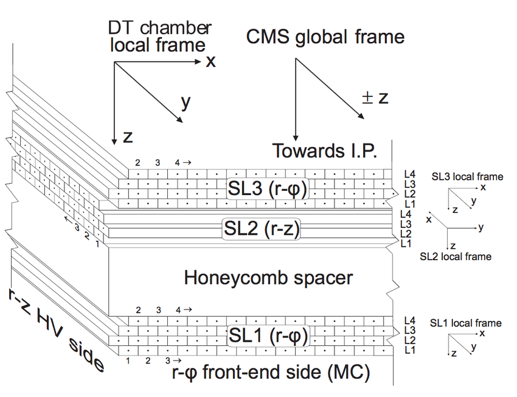

geometry
This module provides tools to manage geometrical objects in the context of CMS DT detectors.
The CMS DTs geometry informatio is stored in a XML file - (DTGeometry.xml).
The geometry module includes a class to read and manage this file (DTGeometry).
By default, an instance of this class is created when this module (geometry) is imported, and the geometry information
can be accessed through the DTGEOMETRY global variable.
Additionally, this module offers a base class for defining geometrical objects representing various DT chamber components (e.g., DriftCell, DT Layer, DT SuperLayer). This base class represents a general cubic form with properties such as bounds, center, id, width, height, etc. In this way, CMS DT chambers are built by nesting instances of DTFrame class (see the geometry-submodules below). In other words, a Chamber is a DTFrame child which contains SuperLayers; SuperLayers are DTFrame children that contain Layers; Layers are DTFrame children that contain DriftCells.
The following image shows the composition of a CMS DT chamber and indicates how the reference frames
for each component are defined. Transformations between these frames are possible with the help of the
TranforManager class (see Transforms below).
{kind=link}

Submodules
Warning
Starting from version 1.1.0, the XML geometry file includes the local and global positions of each Drift Cell. Consequently, the Layer module was updated to directly read these properties from the file in the cells creation. While this enhancement simplifies data access, it increases the creation time of a Station object. To mitigate this when several stations are created, parallelization of the process is strongly recommended.
Classes
DTGeometry
The following example shows how to access the CMS DT geometry information.
if __name__ == "__main__":
dt_geometry = DTGeometry(os.path.abspath("./DTGeometry_v3.xml"))
# Retrieve and print global and local positions, and bounds for specific chambers
global_pos_1 = dt_geometry.get("GlobalPosition", wh=-2, sec=1, st=1)
local_pos_1 = dt_geometry.get("GlobalPosition", wh=-1, sec=1, st=4)
bounds = dt_geometry.get("Bounds", wh=-1, sec=1, st=4)
print(f"Bounds for Wh:-1, Sec:1, St:4: {bounds}")
print(f"Global position for Wh:-2, Sec:1, St:1: {global_pos_1}")
print(f"Local position for Wh:1, Sec:1, St:4: {local_pos_1}")
# Iterate through all layers in a specific SuperLayer and print their attributes
# 1. by using the root element
for layer in dt_geometry.root.find(".//SuperLayer[@rawId='574922752']").iter("Layer"):
print("Layer", layer.attrib)
break
# 2. by using the get method
for layer in dt_geometry.get(rawId="574922752").iter("Layer"):
print("Layer", layer.attrib)
break
# Test retrieving attributes of a specific SuperLayer
Output
Bounds for Wh:-1, Sec:1, St:4: (416.339996, 32.5999985, 251.100006)
Global position for Wh:-2, Sec:1, St:1: (431.175, 39.12, -533.35)
Local position for Wh:1, Sec:1, St:4: (720.2, -94.895, -267.75)
Layer {'rawId': '574923776', 'layerNumber': '1'}
Layer {'rawId': '574923776', 'layerNumber': '1'}
Super_Layer {'rawId': '574922752', 'superLayerNumber': '1'}
Note
Notice that the root attribute of the DTGeometry class is simply an instance of the xml.etree.ElementTree
class, so you can use all its methods to navigate through the XML file. The only advantage of using
DTGeometry is that it provides a more intuitive way to access the specific information of the CMS DT
geometry through the get method.
Tip
Instead of creating an instance of DTGeometry each time, if you will use the default geometry file,
you can access the geometry information from the variable DTGEOMETRY.
DTFrame
Other utils
Transforms
The transforms module provides utility functions for computing geometrical properties, such as the
pseudo-rapidity of a point given its global position. Most importantly, it includes the
TransformManager class, which is instantiated by each DT component to handle transformations
between local, parent, and global reference frames.
Note
This documentation supports multiple versions. Use the version selector in the top-right corner to switch between versions.